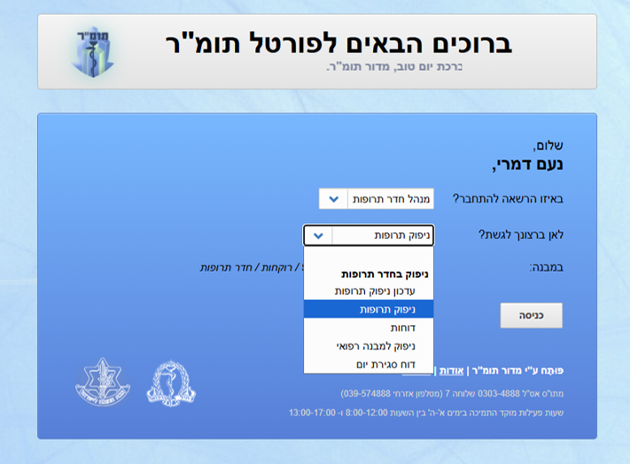
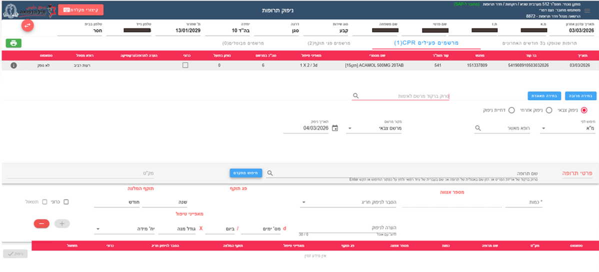
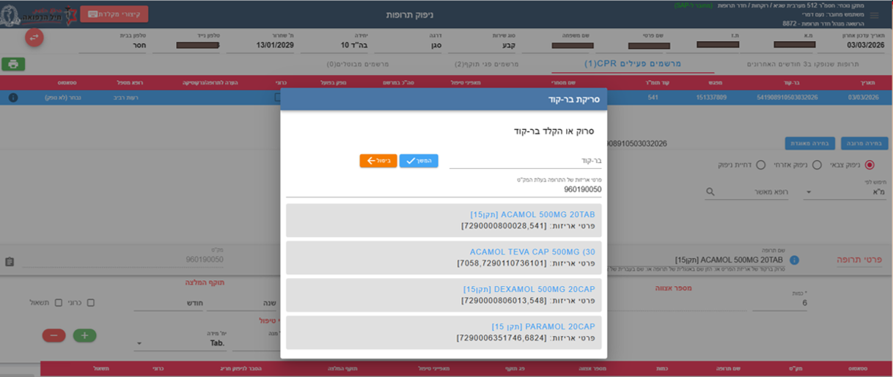
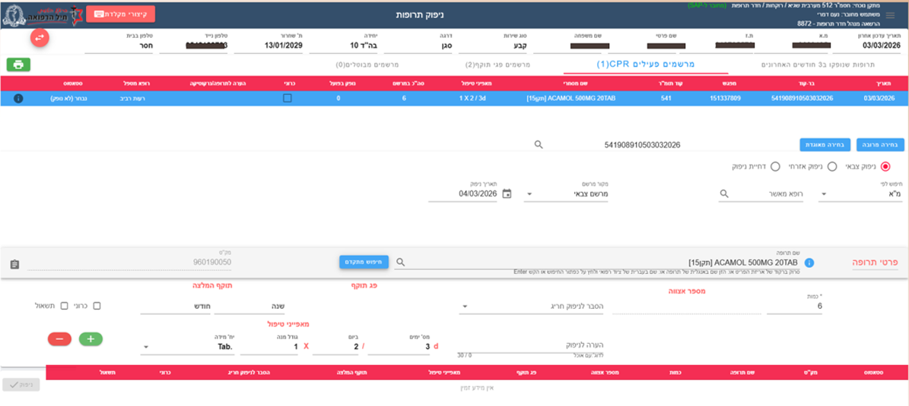
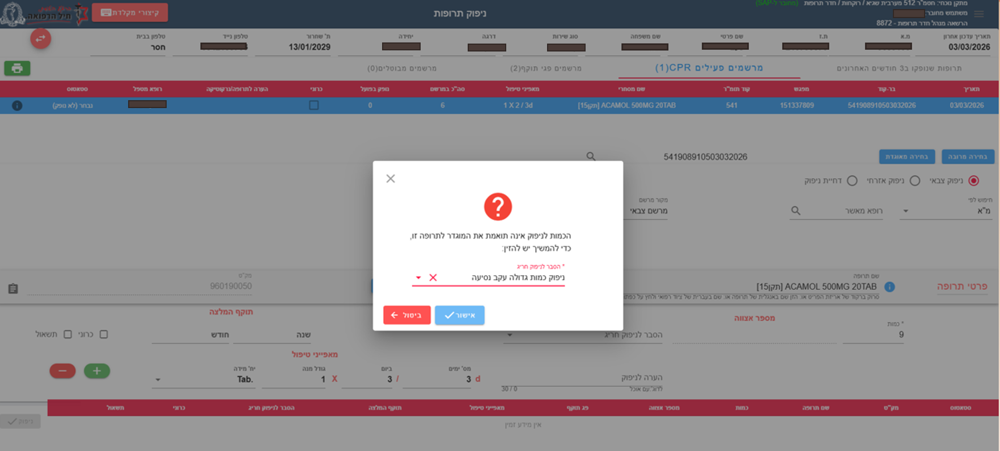
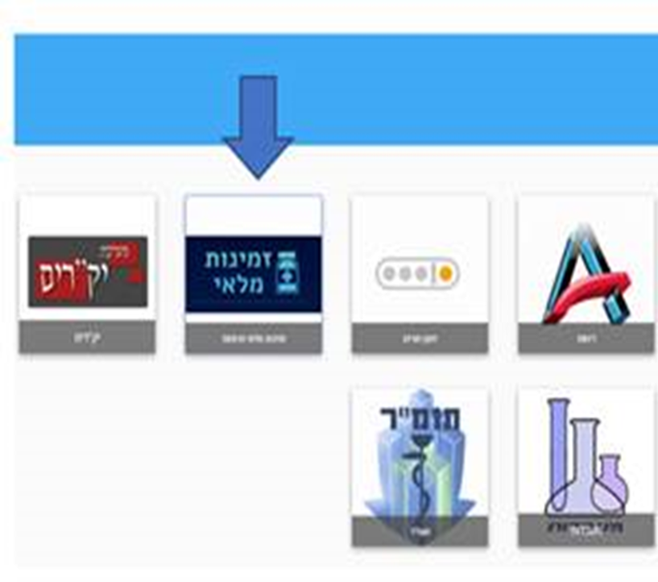

רוקחות בצה"ל


מכינים את הלומדה...
על מה נלמד בלומדה?

סקירת מערך בתי המרקחת בצה”ל

סמכויות רישום וניפוק תרופות

שימוש במערכת התומ”ר

תרופות הדורשות אישור מיוחד- אסמכתא תקציבית

זמינות מלאי
מרפ"א 8280 - פילון
האם אתה בטוח שאתה רוצה לעבור לתרגול?
לפניכם תופיע מפה של ארץ ישראל ושמה של מרפאה. עליכם ללחוץ על המיקום שבו נמצאת המרפאה על גבי המפה.

X
ציונך הוא:
או
| תקן | סמכות רישום | סמכות ניפוק | מקום ניפוק |
|---|---|---|---|
| 15ד | חובש | חובש, רוקח | מרפאת יחידה |
| 15 | רופא יחידה | חובש,רוקח | מרפאת יחידה |
| מומחים | רופא מומחה | רוקח | בית מרקחת |
| אסמכתא תקציבית | דורש אישור ענף שר”פ | רוקח | בית מרקחת |
 שימו לב - לא כל רופא מוסמך לרשום כל תרופה
שימו לב - לא כל רופא מוסמך לרשום כל תרופה
לפניכם יופיע משפט ומספר תרופות לבחירה. בחרו את התרופה המתאימה ביותר למשפט.

אסמכתא תקציבית
תקן 15
מומחים
תקן 15ד
1/4

חובה לתעד ב-CPR את התרופות שניתנו
חובה לנפק את התרופות בשקית ולרשום על גבי השקית את שם התרופה, אצווה, תוקף, ואת אופן הנטילה.
יש להסביר לחייל איך ליטול את התרופה עם עלון לצרכן
לפניכם תופיע שקית עם מדבקה ומספר אופציות. עליכם ללחוץ על האופציות הנכונות לפני מה שלמדתם על הנפקת תרופה השקית

עליך לבחור ארבע תשובות





לחץ על התמונה
ניתנת ע"י ענף שר"פ או באישור הרת"ח
(רופא במומחיות רלוונטית)
תוקף אוטומטי - חצי שנה
ניתן לקצר בקשה לתוקף אסמכתא במלל החופשי.
תרופות מקור או גנריקה ספציפית - מצריכה אסמכתא
שינוי מינון דורש הגשת בקשה חדשה
לפניכם יופיעו מספר משפטים, עליכם להחליט האם המשפט נכון או לא נכון
כאן תופיע השאלה

מהיום אין צורך להדפיס את המרשם!

כחלק משפור השירות לפרט ולמטפלים, נפתחה האופציה במערכת ה-CPR למתן מרשם אלקטרוני (דיגיטל) למטופל.

השימוש במרשם אלקטרוני יאפשר תיעוד של הוראות המטופל למתן טיפול תרופתי ללא צורך להדפיס עותק נייר על מנת לייצר מרשם תקף.

סם מסוכן - עדיין דורש מרשם עם חותמת וחתמת רופא - רק במרפאות צבאיות.
 מטרות המערכת
מטרות המערכת
 מה המערכת מאפשרת
מה המערכת מאפשרת
 במה המערכת עוזרת
במה המערכת עוזרת
 כניסה למערכת
כניסה למערכת
הכניסה למערכת מתאפשרת דרך התומכ"ל.

בהתאם להנחיות צה"ל, אנשי מילואים מקבלים מרשמים רק עבור תרופות לטיפול אקוטי במהלך שירות המילואים הפעיל שלהם, ובהתאם לנהלים הבאים: